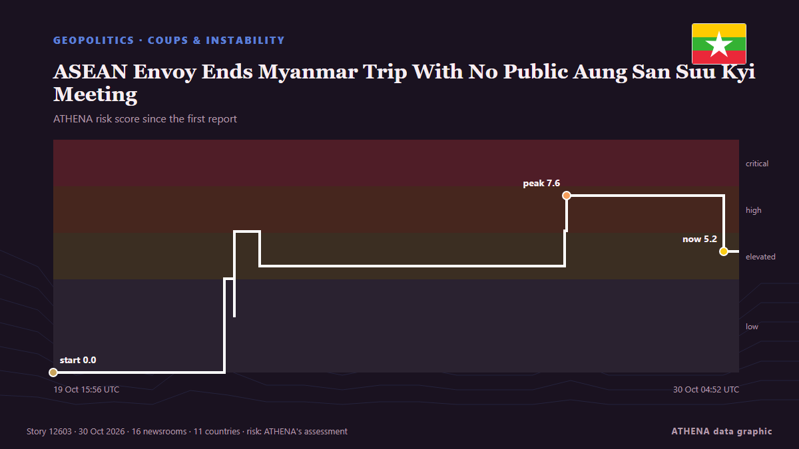

Southeast Asia
Southeast Asia: the latest events country by country, ranked by ATHENA with risk, sources and countries.

GeopoliticsASEAN Envoy Ends Myanmar Trip With No Public Aung San Suu Kyi Meeting
Despite repeated ASEAN requests for access, Philippine Foreign Secretary Lazaro ended her Myanmar visit without a confirmed meeting with Aung San Suu Kyi. from The Irrawaddy
CMA CGM, Nike and Gemadept officially launch electric barge in Vietnam
CMA CGM, Nike and Vietnamese port operator Gemadept have officially launched a fully electric container barge solution in Vietnam, connecting inland cargo operations with the Gemalink deep-sea… from Container News
Stranded cruise ship Odyssey leaves Cambodia with no passengers
A U.S. cruise ship that suspended its operations in Cambodia has left with only crew aboard, according to Cambodian officials. from ABC News (International)
Indonesia deploys over 20,000 troops to Jakarta amid wiretapping probe
Authorities have not confirmed that the military deployment in Jakarta is connected to the arrests of two senior police officers and former national police chief Listyo Sigit Prabowo. from CNA (Channel NewsAsia)
Indonesia, Singapore agree to form task force to tackle forest fires
Foreign Minister Arrmanatha Nasir said Indonesia and Singapore have agreed to form a task force to strengthen joint ... from Antara (English)
Top UN court to rule Nov 19 on Myanmar/Rohingya genocide case
The ICJ has spent seven years considering allegations that Myanmar's brutal repression of the Rohingya violated the 1948 UN Genocide Convention. from Free Malaysia Today
Philippines raises Mayon volcano alert to level 3 after explosive eruption
A nearly six-minute eruption sent an ash column 3,000 metres into the sky, prompting authorities to order evacuations within six kilometres of the crater amid warnings of lava flows and dangerous… from TRT World